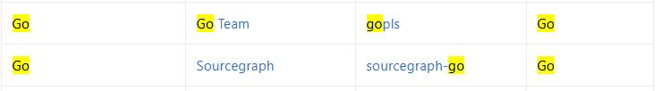

LSP初识以及gopls是什么
要谈 gopls，得先聊聊 LSP。
LSP 是什么
LSP，全称 Language Server Protocol，即语言服务器协议，这是微软创建的一个协议（目前已有 Codenvy，Red Hat 和 Sourcegraph 等公司一起支持它的发展）。定义了在编辑器或 IDE 中与语言服务器之间使用的协议，该语言服务器提供诸如自动完成，转到定义，查找所有引用等语言功能。语言服务器索引格式（LSIF，其发音类似于“ else if”）的目标是支持开发工具或 Web UI 中的富代码导航，而不需要源代码的本地副本。
目前该协议得到了编辑器和语言社区的广泛支持。
LSP 的官方网站：https://microsoft.github.io/language-server-protocol/，GitHub 地址：https://github.com/Microsoft/language-server-protocol。目前最新版本（2020-09-06）：3.15。
LSP 解决了什么问题
为编程语言添加诸如自动完成、转到定义或鼠标悬停出现文档之类的功能需要付出大量的努力。传统上，这项工作必须为每个开发工具重复进行，因为每个工具为实现相同的特性提供不同的 api。
语言服务器（Language Server）旨在提供特定语言的智能功能，并通过支持进程间通讯协议与开发工具进行通信。
语言服务器协议（LSP）背后的思想是为这些服务器和开发工具的通信方式提供标准化协议支持。通过这种方式，可以在多个开发工具中重用单个 Language Server，而这些工具反过来可以用最少的工作支持多种语言。
例如，之前需要为 VSCode 构建 Go 插件、为 Sublime Text 构建 Go 插件、为 Vim 构建 Go 插件、为 Sourcegraph 构建 Go 插件，很多重复的工作。现在，对于每种语言，LSP 允许语言社区将精力集中在一个高性能语言服务器上，这个服务器可以提供代码完成，悬停文档提示、跳转到定义、查找引用等功能，而编辑器和客户端社区可以专注于构建一个单一的、高性能的、直观的和惯用的扩展，这个扩展可以与任何语言服务器通信，即时提供深入的语言支持。
LSP 是语言提供商和工具供应商的双赢！
LSP 的工作原理
语言服务器（Language Server）作为单独的进程运行，开发工具在 LSP 基础上通过 JSON-RPC 与服务器通信。下面是一个开发工具和语言服务器在进行编辑时如何通信的例子：
图片来自 LSP 官网，演示了协议如何在文档引用（uri）和文档位置级别与语言服务器通信。这些数据类型与编程语言无关，适用于所有编程语言。
The user opens a file (referred to as a document) in the tool: The tool notifies the language server that a document is open (‘textDocument/didOpen’). From now on, the truth about the contents of the document is no longer on the file system but kept by the tool in memory. The contents now has to be synchronized between the tool and the language server.
The user makes edits: The tool notifies the server about the document change (‘textDocument/didChange’) and the language representation of the document is updated by the language server. As this happens, the language server analyses this information and notifies the tool with the detected errors and warnings (‘textDocument/publishDiagnostics’).
The user executes “Go to Definition” on a symbol of an open document: The tool sends a ‘textDocument/definition’ request with two parameters: (1) the document URI and (2) the text position from where the ‘Go to Definition’ request was initiated to the server. The server responds with the document URI and the position of the symbol’s definition inside the document.
The user closes the document (file): A ‘textDocument/didClose’ notification is sent from the tool informing the language server that the document is now no longer in memory. The current contents are now up to date on the file system.
以下是在 C++ 文档中针对“Go to Definition”请求在开发工具和语言服务器之间传输的有效负载。
这是请求:
1 | { |
这是响应：
1 | { |
gopls 是什么
经过上面对 LSP 的介绍，你应该猜到 gopls（发音为“Go please”） 是什么了吧？！没错，gopls是由 Go 团队开发的官方 Go 语言服务器。它为任何 LSP 兼容的编辑器提供 IDE 功能。
在 LSP 官网列出了相关的实现，包括三个部分。
1、Language Servers：列出各个语言的 LSP 实现
其中 Go 语言的实现有两个：（Sourcegraph 的不再维护，因为集中维护一个会更好）

gopls 是 Go 官方维护的、对 LSP 的实现，即一个 Go 语言的官方 Language Server。
2、LSP Clients：列出支持 LSP 的开发工具
包括 VSCode、Sublime Text、Atom、Emacs、Vim 和 Eclipse 等很多开发工具。在上文提到的两个网站都有列出。
3、SDKs for LSP：为了方便开发
为了方便开发，还有一些 LSP 的 SDK 可以使用。具体可以查看：https://microsoft.github.io/language-server-protocol/implementors/sdks/。
进一步了解 gopls
首先说明下，目前 gopls 还不是稳定版本，处于 alpha 状态，所以 VSCode 默认没有启用它。项目地址：https://github.com/golang/tools/tree/master/gopls。
目前 gopls 支持的特性包括：
- Autocompletion
- Jump to definition
- Signature help
- Hover
- Document symbols
- References
- Rename
目前已知存在如下的问题：
- Editing multiple modules in one editor window: #32394[1]
- Type checking does not work in cgo packages: #35721[2]
- Does not work with build tags: #29202[3]
- Find references and rename only work in a single package: #32877[4]
当前 gopls 的工作重点是确保稳定性（期待发布 1.0 版本），之前一直受诟骂的是资源占用，目前已经好太多了。
有如下编辑器支持 gopls，你可以根据自己喜爱的编辑器查看相应的安装、配置说明。
- VSCode[5]
- Vim Neovim Vim/Neovim[6]
- Emacs[7]
- Acme[8]
- Sublime Text[9]
- Atom[10]
LSP初识以及gopls是什么